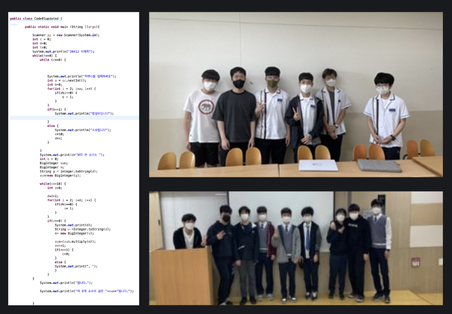

<div id="de_modal-content" class="container">
    <div class="row g-5">
        <div class="col-lg-8">
            
            
        </div>
        <div class="col-lg-4 de_project-info">
            <h3>COMMA</h3>
            <p>COMMA is an abbreviation for COMputer and MAth and this club was founded by me to educate how to incorporate computer science skills into math problems through various programming languages. Created high-precision derivative calculators to solve math problems using CS and led an initiative to incorporate these calculators in AP calculus class. Number theory problems were solved and we incorporated mathematical algorithms such as DFS in nomenclature.


            </p>
           
            <div class="de_project-details">
                <div class="d-field">
                    <i class="fa fa-user-o"></i>Position: <span>Founder/Leader</span>
                </div>
                <div class="d-field">
                    <i class="fa fa-file-text-o"></i>Type: <span>Club</span>
                </div>
                <div class="d-field">
                    <i class="fa fa-calendar-o"></i>Year: <span>2022</span>
                </div>
                <div class="d-field">
                    <i class="fa fa-external-link"></i>Member: <span>12</span>
                </div>
            </div>
            <div class="spacer-30"></div>

        </div>
    </div>
</div>